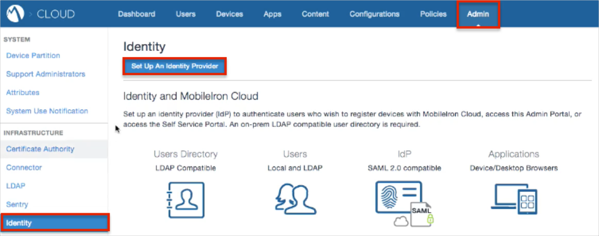
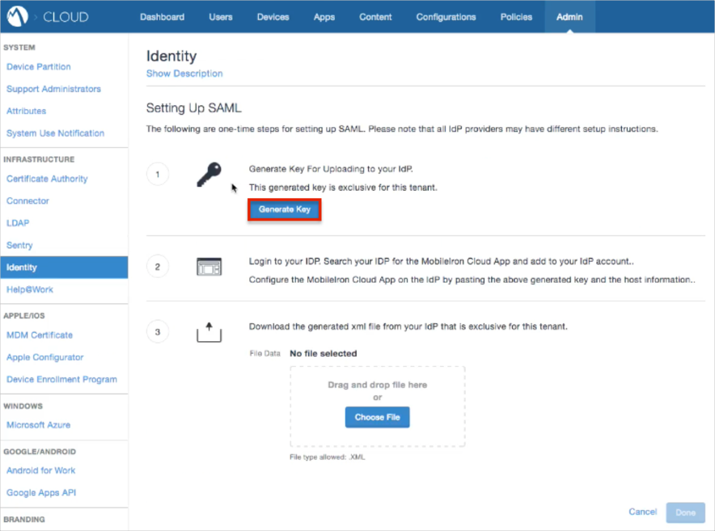
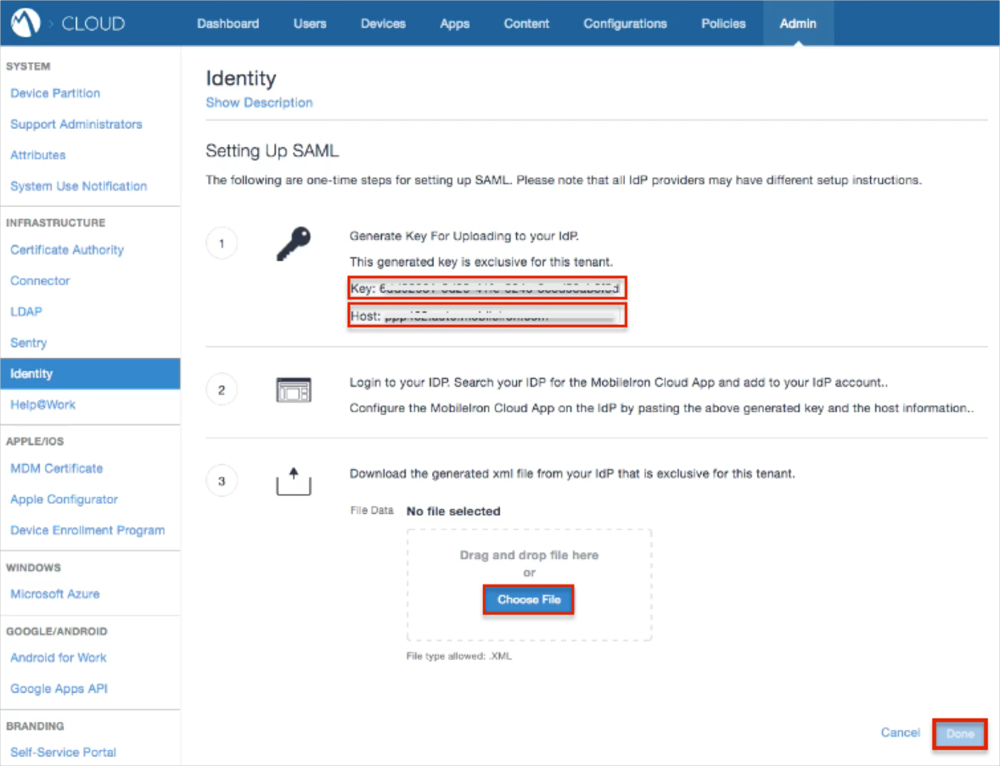
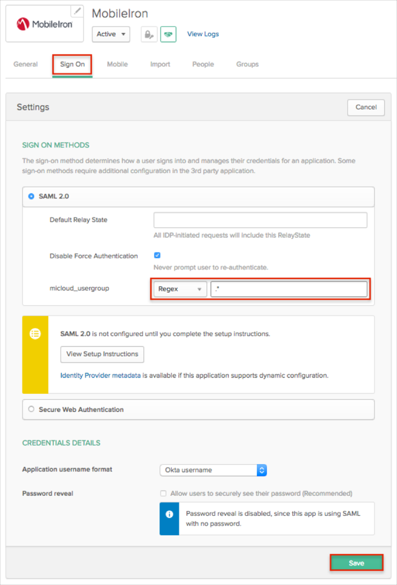
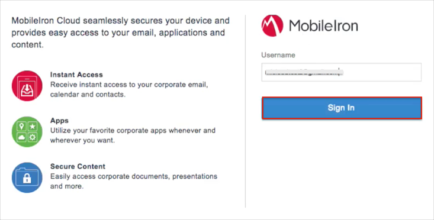

Login to MobileIron as an administrator.
Navigate to Admin > Identity.
Click the Set Up An Identity Provider button:

Click the Generate Key button:

Save the Key and Host values.
Copy the following IDP Metadata and save it as metadata.xml.
Sign in to Okta Admin app to have this variable generated for you.
Click Choose File and upload the metadata.xml file you just saved.
Click Done.

In Okta, select the General tab for the MobileIron app, then click Edit.
Enter the Key and Host values you saved earlier into the corresponding fields.
Click Save.
Optional if you need to send the Groups as part of the SAML assertion: Select the Sign On tab, then click Edit.
Select your preferred Group filter from the dropdown list (the Regex rule with the value ".*" in order to send *all* groups to the MobileIron instance we used in our example). .
Click Save.

Done!
Notes:
SP-initiated flows and IDP-initiated flows are supported.
Just In Time (JIT) provisioning is not supported.
Open the login URL.
Enter your Username.
Click Sign In.
